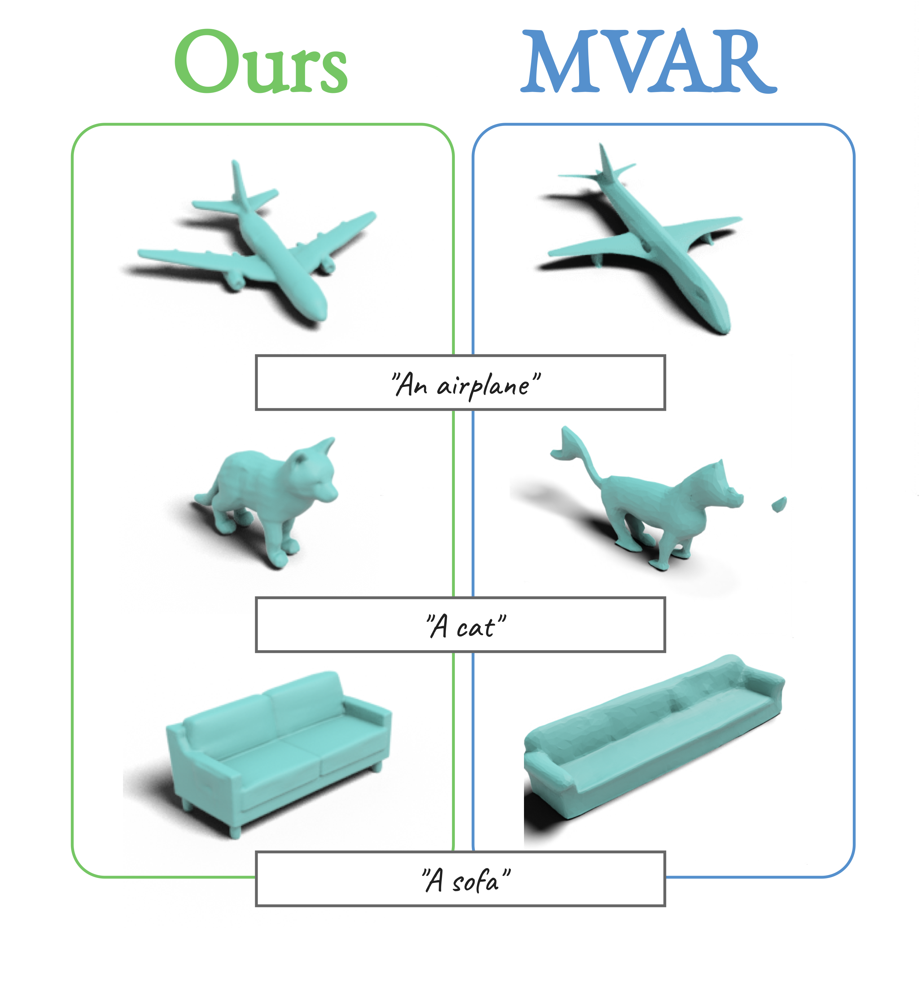

ICML rebuttal visual results
1. Comparison with MVAR

We ran a small qualitative comparison between our model and MVAR. Since MVAR is fundamentally a multi-view generation model, we used Trellis pipeline to reconstruct the meshes from multi-views.